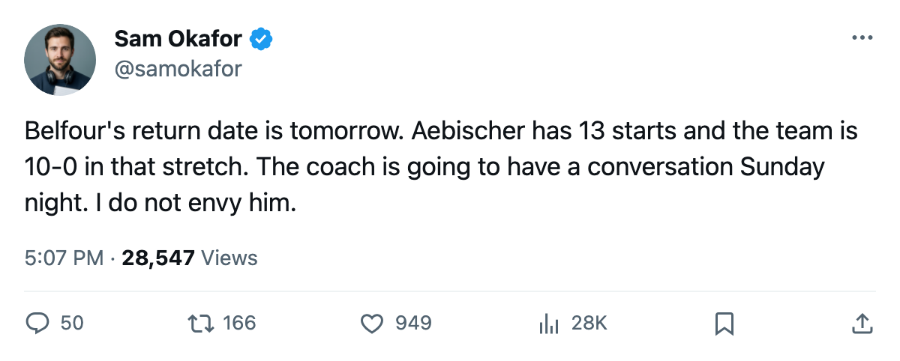

Injury Desk: Belfour returns tomorrow, and Aebischer has no reason to give the crease back
The 39-year-old is back from a 3-day absence. The 26-year-old has 13 starts and a 10-game winning streak.
 Sam OkaforLeafs beat reporter · Queen City Telegram
Sam OkaforLeafs beat reporter · Queen City Telegram
The piece
 Ed Belfour91 is expected back on 2004-12-05. His onset window runs between 2004-12-01 and 2004-12-04, which means he missed at least the 6-0 win over
Ed Belfour91 is expected back on 2004-12-05. His onset window runs between 2004-12-01 and 2004-12-04, which means he missed at least the 6-0 win over  Tampa Bay Lightning on 2004-12-03. The
Tampa Bay Lightning on 2004-12-03. The  Toronto Maple Leafs Maple Leafs take the ice at
Toronto Maple Leafs Maple Leafs take the ice at  New York Islanders on 2004-12-06, one day after his return date.
New York Islanders on 2004-12-06, one day after his return date.
Belfour is 39 years old, graded 92 overall, and carries a $6.50M cap hit with 1 contract year remaining. He has appeared in 10 games this season.  David Aebischer84, 26, has 13 starts, a 85 overall, and a $0.50M salary with 1 contract year remaining. The team has not lost since 2004-11-12. Every one of those 10 games was a win.
David Aebischer84, 26, has 13 starts, a 85 overall, and a $0.50M salary with 1 contract year remaining. The team has not lost since 2004-11-12. Every one of those 10 games was a win.
Aebischer costs $0.50M against Belfour's $6.50M and has produced the same 10-0 result in net that the veteran would want. The winning streak started before either goalie's recent health window, but Belfour was injured during it, meaning Aebischer closed out several of those victories without his backup available.
What the coach walks into Saturday
Mikael Tellqvist73 dressed in 4 games before falling out of the rotation. His form sits at -3 on the Development Index, reading 74 overall against a base of 77. That leaves exactly two credible options between the pipes when Belfour suits up.
The Toronto Maple Leafs record in 25 games: 18 wins, 5 losses, 0 overtime losses, 40 points, 147 goals for, 76 goals against. The club leads the Northeast by 18 points over  Ottawa Senators. The last 10 games produced 75 goals scored and 18 allowed.
Ottawa Senators. The last 10 games produced 75 goals scored and 18 allowed.
Belfour's return date is firm. His overall is 92, the highest on the roster by 5 points. 56.0 mpg is a starter's number when healthy. But 13 starts for Aebischer against 10 for Belfour tells you who the coach trusted before the injury, and the results since the streak began have not contradicted that call.
New York Islanders sits 12-10-1 for 27 points and is on a 2-game winning streak.  New Jersey Devils visits on 2004-12-07. The next five games include three divisional or conference opponents fighting for playoff position. This is not a stretch to get the goalie call wrong.
New Jersey Devils visits on 2004-12-07. The next five games include three divisional or conference opponents fighting for playoff position. This is not a stretch to get the goalie call wrong.
